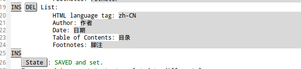

Emacs Org-Mode
目录
- 1. org-mode example/src过大
- 2. org-mode中使用宏
- 3. org-mode 中嵌入latex公式
- 4. org-mode 中block中嵌入#+begin_example
- 5. org-mode导出HTML目录显示“目录”而非默认的Table Of Content
- 6. org-mode导出PDF目录显示“目录”而非默认的Contents
- 7. org-mode的表格中输入|
- 8. Emacs Org配置简单快捷键
- 9. org-mode 链接
- 10. org-mode 导出HTML时创建内部文件链接
- 11. org-mode 导出HTML时创建外部文件链接
- 12. org-mode M-RET插入多余的空白行
- 13. org-sync
- 14. GTD
- 15. include外部文件
- 16. 源码显示行号和进行引用
- 17. 不export出指定heading
- 18. 替换Emacs自带的手册
- 19. 块内执行代码
- 20. 行内执行代码
- 21. 强调
- 22. 行内颜色
- 23. org-contacts
- 24. org8.x快捷键
1 org-mode example/src过大
当在#+begin_example #+end_example或者#+begin_src #+end_src环境中内容过多时会占用大量空间，一个解决办法是加上 -t 选项并配合 -h height -w width 选项来指定高宽，使它成为有滚动条的区域。但好像无法使用语法高亮并且此区域内容是可编辑的。
另一个解决办法是加在src或example外围加上div:
例如：
#+html: <div style="height:100px;overflow:auto;border-style:solid;border-width:1px">
#+begin_src c++
typedef int HANDS;
enum COLOR { Red, Green, Blue, Yellow, White, Black, Brown } ;
enum BOOL { FALSE, TRUE };
class Animal // common base to both horse and bird
{
public:
Animal(int);
virtual ~Animal() { cout << "Animal destructor...\n"; }
virtual int GetAge() const { return itsAge; }
virtual void SetAge(int age) { itsAge = age; }
private:
int itsAge;
};
#+end_src
#+html: </div>
效果如下：
typedef int HANDS; enum COLOR { Red, Green, Blue, Yellow, White, Black, Brown } ; enum BOOL { FALSE, TRUE }; class Animal // common base to both horse and bird { public: Animal(int); virtual ~Animal() { cout << "Animal destructor...\n"; } virtual int GetAge() const { return itsAge; } virtual void SetAge(int age) { itsAge = age; } private: int itsAge; };
可以定制yasnippet以方便以后使用：
# -*- mode: snippet -*-
# name: longsrc
# --
#+html: <div style="height:${1:200px};overflow:auto;border-style:solid;border-width:1px">
#+html: </div>
2 org-mode中使用宏
在文章的开始定义宏，格式为 #+macro: macro_name macro_content_with_$1_arg1_$2_arg2_…
宏中\n表示换行。
在文章中使用宏 ，多个参数用,隔开
宏定义时可以嵌套，但宏调用时不应该嵌套。
其中org-mode内置的宏包括
{{{title}}}
{{{author}}}
{{{date(format)}}} 其中format格式必须可以被函数 =format-time-string= 识别，常用的包括 %Y-%m-%d-%H-%M-%S 年月日时分秒
%x 格式为： 10/29/2012
%X 格式为： 11:46:33 AM
%c 格式为： Mon 29 Oct 2012 11:46:33 AM CST
%D 格式为： 10/29/12
%R 格式为： 11:46
%T 格式为： 11:46:33
%r 格式为： 11:46:33 AM
还有其它的org中的关键字
利用宏可以减少冗余文本使内容更清晰，比如我在extension.org里定义了如下宏：
#+macro:lightbox #+html:<link rel="stylesheet" href="../../Layout/CSS/jquery.lightbox-0.5.css" type="text/css" media="screen" /> <script type="text/javascript" src="../../Layout/JS/jquery.lightbox-0.5.js"></script> <center> <a class="lightbox" href="$1"> <img class="lightbox " title="点击查看大图" src="$1" width="300"> </a> </center> <script type="text/javascript"> $(function() {$('a.lightbox').lightBox();}); </script>
我在欲导出HTML的Org文件比如emacs_trick.org头部写上：
#+SETUPFILE: "extension.org"
则便可以在emacs_trick.org中使用此宏: {{{ lightbox(images/image_name.jpg) }}}
只需要一行就搞定了。
这样我就可以把所有的宏全部写在extension.org里，然后可以重复使用：只需要SETUPFILE指定就可以使用了。
3 org-mode 中嵌入latex公式
$$ \(\)表行内，$$ $$ \[ \] 表行间
If $a^2=b$ and \( b=2 \), then the solution must be
either $$ a=+\sqrt{2} $$ or \[ a=-\sqrt{2} \].
效果如下：
If \(a^2=b\) and \( b=2 \), then the solution must be
either $$ a=+\sqrt{2} $$ or \[ a=-\sqrt{2} \].
4 org-mode 中block中嵌入#+begin_example
#+begin_example #+begin_example 这种情况导出的不会包含#+begin_example,因为把想要字面导出的#+begin_example当成了example环境 #+end_example #+end_example
应该这样写
#+begin_src org #+begin_example 这样就对了,在这种情况下可以快捷键C-c ' 来进入源码编辑模式 #+end_example #+end_src
也可以在第行前面加上:空格 来表示字面解析：
: #+begin_example : 这样就对了 : #+end_example
5 org-mode导出HTML目录显示“目录”而非默认的Table Of Content
M-x customize-variable ENTER org-export-language-setup 在最后ins插入新的List:

再 M-x customize-variable ENTER org-export-default-language 改成 zh-CN。
也可以使用下面语句：
(setq org-export-language-setup (append org-export-language-setup '(("zh-CN" "作者" "日期" "目录" "脚注")))) (setq org-export-default-language "zh-CN")
6 org-mode导出PDF目录显示“目录”而非默认的Contents
在 org-export-latex-classes 中加上 \\renewcommand\\contentsname{目录}
7 org-mode的表格中输入|
两种办法：
\vert{}使用 \(\LaTeX\)
- 快捷键
C-c C-x \
8 Emacs Org配置简单快捷键
M-x custoize-varialbe RET org-structure-template-alist
9 org-mode 链接
http://www.astro.uva.nl/~dominik on the web doi:10.1000/182 DOI for an electronic resource file:/home/dominik/images/jupiter.jpg file, absolute path /home/dominik/images/jupiter.jpg same as above file:papers/last.pdf file, relative path ./papers/last.pdf same as above file:/myself@some.where:papers/last.pdf file, path on remote machine /myself@some.where:papers/last.pdf same as above file:sometextfile::NNN file, jump to line number file:projects.org another Org file file:projects.org::some words text search in Org file(1) file:projects.org::*task title heading search in Org file file+sys:/path/to/file open via OS, like double-click file+emacs:/path/to/file force opening by Emacs docview:papers/last.pdf::NNN open in doc-view mode at page id:B7423F4D-2E8A-471B-8810-C40F074717E9 Link to heading by ID news:comp.emacs Usenet link mailto:adent@galaxy.net Mail link vm:folder VM folder link vm:folder#id VM message link vm://myself@some.where.org/folder#id VM on remote machine wl:folder WANDERLUST folder link wl:folder#id WANDERLUST message link mhe:folder MH-E folder link mhe:folder#id MH-E message link rmail:folder RMAIL folder link rmail:folder#id RMAIL message link gnus:group Gnus group link gnus:group#id Gnus article link bbdb:R.*Stallman BBDB link (with regexp) irc:/irc.com/#emacs/bob IRC link info:org#External links Info node link shell:ls *.org A shell command elisp:org-agenda Interactive Elisp command elisp:(find-file-other-frame "Elisp.org") Elisp form to evaluate
例如下面导b同HTML结果为： Send Me a mail
[[mailto:visayafan@gmail.com][Send Me a mail]]
在下面语句上 C-c C-o y 即可查看 elisp 语句执行结果：
[[elisp:(buffer-name)]]
10 org-mode 导出HTML时创建内部文件链接
在一篇文章中建立内部链接很简单
10.1 添加anchor，
10.1.1 7.x
#<<anchor>>
在想要链接到上面的地主添加链接即可:
[[anchor]]
10.1.2 8.x
<<anchor>>
10.2 store-link, insert-link
在跳转目的地 org-store-link 在跳转处 org-insert-link 。
11 org-mode 导出HTML时创建外部文件链接
可以利用 CUSTOM_ID 属性。
file1.org中:
* heading-x :properties: :CUSTOM_ID: id_name :end:
file2.org中：
[[file:file1.org::id_name][test_to_show]]
即可在file2.html创建指向file1.html中的指定位置链接。
可以使用快捷键 =C-c C-x p=。
12 org-mode M-RET插入多余的空白行
为什么要插入空白行
解决办法： customzie-variable RET org-blank-before-new-entry 将两个Choice都选为Never即可。
14 GTD
| C-c C-q | 插入标签 |
| C-c C-c | 同上 |
| C-c \ | 查找某个TAG下的所有项目 |
| C-c / m | 建立符合某个TAG的tree |
| C-c > | calendar |
| C-c < | 把光标所在处的时间插入到文件中 |
| C-c C-t | todo/done |
| C-c C-d | 插入deadline |
| C-c / b | 查看deadline在指定时间前的任务 |
| C-c / a | 查看deadline在指定时间后的任务 |
| C-c / d | 查看所有deadline任务 |
15 include外部文件
#+include "filename" options 其中options可以是：
- src/example/quote 如果是src的话可以指定源码语言
#+INCLUDE: "~/.emacs" src emacs-lisp
:minlevel n如果导入的文件为org文件，则默认情况下导入文件整体结构的级别和当前所在级别相同，可以通过minlevel来使其成为子结构或父结构(负数)。
- :lines "n1-n2" 只敢n1-n2行（左闭右开），可以省略n1或n2表开头至n2或n1到结尾
C-c ` 来访问导入的外部文件
16 源码显示行号和进行引用
用 -n 来指定显示行号和 -r 来启动引用选项。
#+BEGIN_SRC emacs-lisp -n -r (save-excursion (ref:sc) (goto-char (point-min)) (ref:jump) #+END_SRC In line [[(sc)]] we remember the current position. [[(jump)][Line (jump)]] jumps to point-min.
生成效果：
1: (save-excursion 2: (goto-char (point-min))
In line 1 we remember the current position. Line 2 jumps to point-min.
在源码上 C-c '会打开临时buffer以便编辑（会打开源码的对应的major mode），可以调用 org-store-link 来添加一个引用。
17 不export出指定heading
可以为不想导出的标题添加 noexport tag:
C-c C-q TAB noexport
另一种解决办法是在不想导出的部分 C-c ; 可以将这部分heading标记为注释
18 替换Emacs自带的手册
Emacs自带的org手册总是滞后于org最新的手册，在Emacs中 C-h i 查看的是自带的而非当前正在使用的最新的，可以用下面的方法将自带的帮助替换掉。
下载org的源码后 make install 后会在 /usr/share/info 目录下生成org文件，此文件即为帮助文件。（如果不想安装也可以 make doc 来生成）
Emacs中 C-h i 后进入org的帮助，此时 C-x C-f 后显示Emacs自带的org帮助的位置，用刚才生成的org替换掉自带的即可。
19 块内执行代码
首先配置变量 org-babel-load-languages
(org-babel-do-load-languages 'org-babel-load-languages '( (sh . t) (emacs-lisp . t))) (setq org-confirm-babel-evaluate nil) ;禁止每次都提示是否调用外部程序
- :file 后跟输入文件名
- :exports后可跟4个选项code/results/both/none分别对应只显示代码/结果，代码和结果都显示，都不显示
- :dir 后跟代码执行路径，默认是当前文件路径
- :var varname=value 代码中可用的变量
#+BEGIN_SRC sh :exports both :var filename=(buffer-file-name) wc -l $filename ls -l #+END_SRC
在块中的可执行代码上 C-c C-c 执行代码并显示结果； C-c C-o 在另一个buffer中显示结果。
20 行内执行代码
prefix src_emacs-lisp[:exports results]{(let (value) (dotimes (n 10 value) (setq value (cons n value))))} suffix
结果如下：
prefix | 9 | 8 | 7 | 6 | 5 | 4 | 3 | 2 | 1 | 0 |
suffix
21 强调
可以用 =代码= 或 ~代码~ 。
其它：
/italic/ *bold* _underline_ +strike-through+
效果
italic bold underline strike-through
22 行内颜色
22.1 7.x版本
org-export-html-final-hook 里的函数是对导出生成HTML的最后阶段的buffer进行操作，可以进行一些替换，例如将 AAAAA 替换成HTML的左TAG < ，将 BBBBB 替换成右TAG > ，这样 AAAAAfont color="red"BBBBBthis is redAAAAA/fontBBBBB 会被替换成 <font color="red">this is red</font> 被浏览器解析后便形成红色文本。
替换函数如下：
(add-hook 'org-export-html-final-hook 'org-delete-!!!) (defun org-delete-!!! () (interactive) (goto-char (point-min)) (while (re-search-forward "AAAAA" nil t) (replace-match "<")) (goto-char (point-min)) (while (re-search-forward "BBBBB" nil t) (replace-match ">")))
#+macro: clr AAAAAfont color="$1"BBBBB$2AAAAA/fontBBBBB
hello {{{clr(red, this is red)}}} world
hello {{{clr(blue, this is blue)}}} world
hello {{{clr(yellow, this is yellow)}}} world
hello {{{clr(green, this is green)}}} world
生成效果如下：
hello this is red world
hello this is blue world
hello this is yellow world
hello this is green world
可以写一个名为color的yasnippet来方便输入：
# -*- mode: snippet -*-
# name: clr
# --
{{{clr(${1:red},${2:文本})}}}$0
22.2 8.x版本
(eval-after-load 'ox-html '(add-to-list 'org-export-filter-final-output-functions 'fan/org-html-produce-inline-html)) (defun fan/org-html-produce-inline-html (string backend info) "replace < to < and > to >" (when (and (org-export-derived-backend-p backend 'html) (string-match "!!!!!" string)) (replace-regexp-in-string (rx (= 5 "!") (group (+? anything)) (= 5 "@")) "<\\1>" string)))
另外8.x较7.x更新较大,新的hooks和commands在http://orgmode.org/worg/doc.html
23 org-contacts
git clone下来的org的contrib/lisp文件下有org-contacts文件，被用来代替org-rememble和bbdb。
org-contacts和gnus配合得很好，在发信人上输入姓名后TAB可以补全，在阅读article时光标放在email上 org-capture 可以捕获此邮件。
(add-to-list 'load-path "~/.emacs.d/org-mode/contrib/lisp") (require 'org-contacts) ;; win和linux下文件存放目录不同 (setq fan/org-contacts-file-location (if (eq system-type 'gnu/linux) "/home/visayafan/d/Dropbox/others/contacts.org" "D:/Dropbox/others/contacts.org")) (add-to-list 'org-contacts-files fan/org-contacts-file-location) (eval-after-load "org-capture" '(progn (add-to-list 'org-capture-templates '("c" "Contacts" entry (file fan/org-contacts-file-location) "* %(org-contacts-template-name) :PROPERTIES: :EMAIL: %(org-contacts-template-email) :END:"))))
另外函数 org-contacts 用来查找。
24 org8.x快捷键
24.1 M-RET添加前缀
org8中不管位于当前行何处，M-RET用当前行的内容生成一个新的等级headline或item(当位于一个headline上执行此命令时如果在行首时新headline在当前headilne之前，其余在之后)
(org7中只有当位于行首时才用当前行内容生成新的headline，在行尾时插入新行生成新的headline，行中间时用光标后面的内容生成新的headline)
- 加上前缀C-u不管现在位置在哪都会生成新的等级headline，此headline位于当前headline下面
- 加前缀C-u C-u与C-u区别在于生成的headline位置为同级headline最后一个
24.2 M-S-RET和C-S-RET插入TODO
区别在于前者把当前行作为新TODO item，后者不管光标在哪插入同级的headline。
两个都可以添加C-u和C-u C-u前缀.
C-u C-u M-S-RET好像和C-u C-u C-S-RET一样都是生成同级最后headline。
加C-u好像没作用。
24.3 narrow/widen
类似 C-x n n ， C-x n s 只显示一个子树， C-x n b 只显示当前块，都是 C-x n w 来恢复。
此功能有利于精简当前buffer内容使注意力更加集中。
24.4 M-h mark-element
当前在一个二级headline上，按下 M-h 则会mar中整个二级树，再按 M-h mark后来的二级树……
同理在一个段落上M-h会不段地mark段落。
24.5 M-up/down
org-metaup 根据环境不同调用 org-move-subtree-up or org-table-move-row or org-move-item-up .
原来的M-S-up基于被M-up替换了，况且Ubuntu12.04中M-S-up被用于散开所有窗口。
24.6 C-c *
将item或普通文本变成headline
将headline变成普通文本